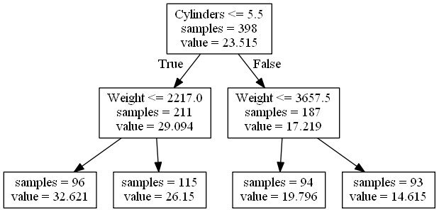
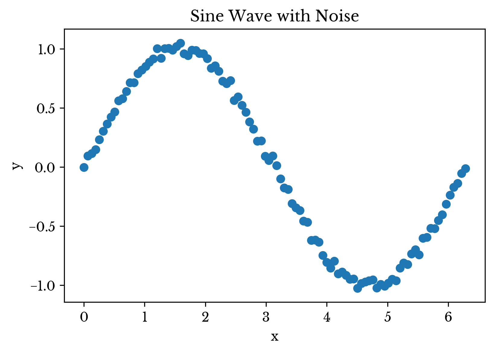
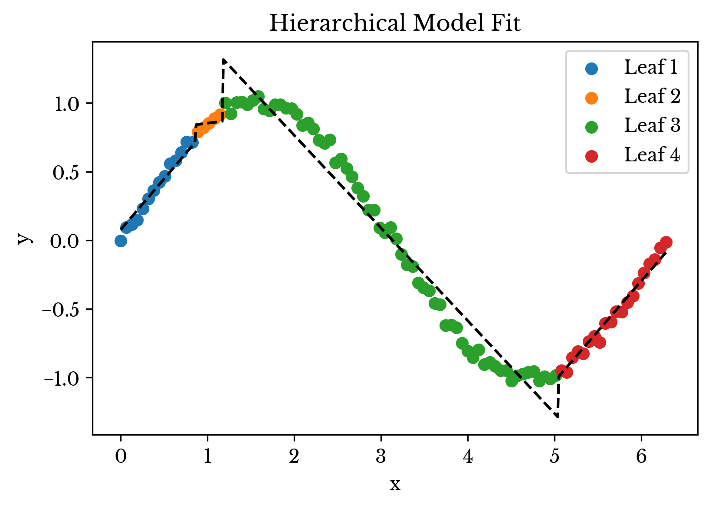
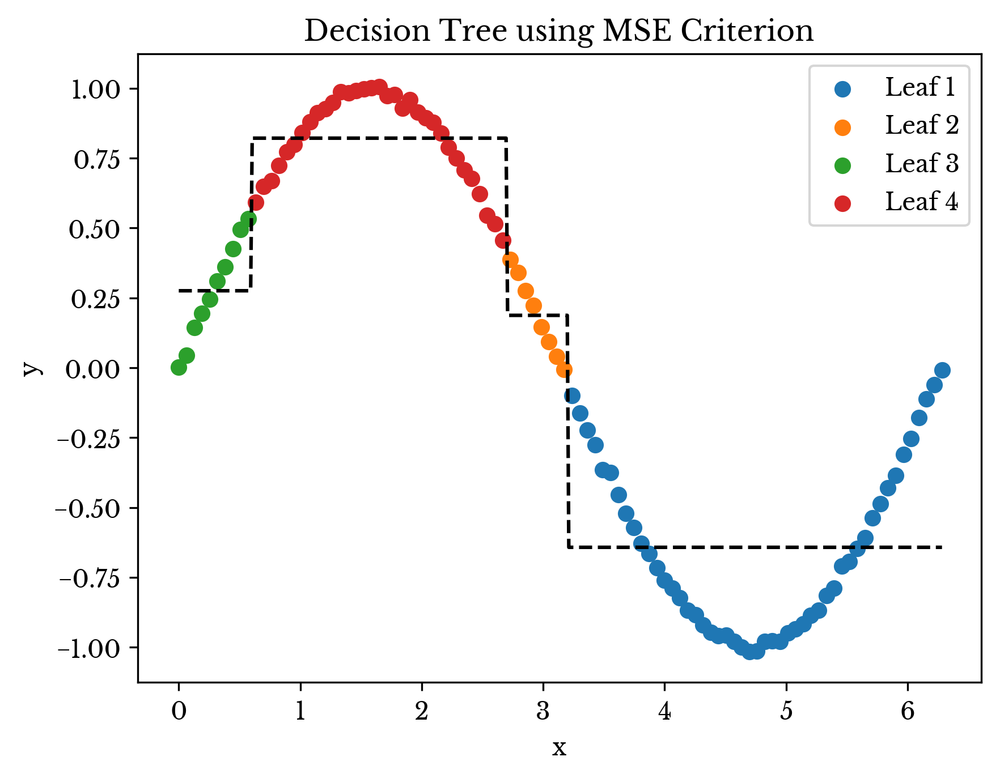

Applying Correlation as a Criterion in Hierarchical Decision Trees
Thu, 27 Dec 2018
Cython, Data Science, Decision Tree, Machine Learning, Scikit-Learn, Statistics
Decision trees are a simple yet powerful method of machine learning. A binary tree is constructed in which the leaf nodes represent predictions. The internal nodes are decision points. Thus, paths from the root to the leafs represent sequences of decisions that result in an ultimate prediction.
Decision trees can also be used in hierarchical models. For instance, the leafs can instead represent subordinate models. Thus, a path from the root to a leaf node is a sequence of decisions that result in a prediction made by a subordinate model. The subordinate model is only responsible for predicting samples that fall within the leaf.
This post presents an approach for a hierarchical decision tree model with subordinate linear regression models.
A More Suitable Criterion
Decision trees are constructed in a top-down greedy approach by attempting to minimize the
impurity of the leaf nodes. Impure nodes are split into two leafs based on a condition. The condition is typically of the form \(x_i \leq a\) for some feature \(x_i\) and some split point \(a\). Once split, the parent becomes a decision point. This proceeds until all leafs are
pure to within some tolerance or a maximum height is reached. A greedy approach is used as finding a decision tree that optimally minimizes some criterion is
NP-Hard for most non-trivial criterion.
Figure 1 shows a simple decision tree for predicting the MPG of a car based on two features: the number of cylinders and the weight of the car. The leaf nodes are labeled with the number of training samples in the leaf and the leaf prediction.

Figure 1: Decision Tree for Predicting MPG
In regression models, the prediction at a leaf node is simply the centroid of all target values within the node. Thus, impurity is typically evaluated as the variance around this centroid; all deviation from the centroid is error since the prediction is constant.
If the leaf nodes are subordinate linear regression models, this criterion is not effective. The regression models are able to represent an arbitrary amount of linear variance. Instead, the leaf nodes should contain samples with a strong linear relationship to the target values. Variance should not be penalized.
A simple approximation for this is the correlation between the samples in the leaf node and the target values. For simplicity and performance, the average correlation between all pairs of the individual features and targets is used. The impurity is
\[\displaylines{I(\textbf{A}, \textbf{Y})=1 - |\frac{1}{n_1 \times n_2}\sum\limits_{k=1}^{n_2}{\sum\limits_{j=1}^{n_1}{(\textbf{A}_j - \bar{\textbf{A}}_j)(\textbf{Y}_k - \bar{\textbf{Y}}_k)/(s_{\textbf{A}_j}s_{\textbf{Y}_k})}}| }\ ,\]
where
A and
Y are data and target matrices containing the samples in the leaf node, \(n_1\) is the number of input features, and \(n_2\) is the number of output features. So that \(I(\textbf{A}, \textbf{Y}) \in [0, 1]\), with 0 representing total purity and 1 representing total impurity as is typical.
Implementation in Cython
The decision tree class in
scikit-learn accepts a criterion parameter. If a string is passed, one of the available criterion classes is used, such as
mse for mean-squared error. However, an arbitrary subclass of the
Criterion class can be passed. The catch is that
Criterion is a Cython class.
The custom subclass is implemented in Cython, compiled, and then imported into a Python file. An instance is created and then passed to the
DecisionTreeRegressor class using the
criterion parameter.
A very straightforward implementation of the criterion is provided. It is challenging to precompute some of the values since the means change with the values
i1 and
i2. Further, precomputing all possible means and standard-deviations for
i1 and
i2 may be wasteful. A memoization approach is likely more efficient, but is not explored here for simplicity.
cdef double CCNode(self, SIZE_t i1, SIZE_t i2) nogil:
cdef DOUBLE_t* x = self.x
cdef SIZE_t xn = self.xn
cdef DOUBLE_t* y = self.y
cdef DOUBLE_t* sample_weight = self.sample_weight
cdef SIZE_t* samples = self.samples
cdef SIZE_t i
cdef SIZE_t p
cdef SIZE_t k
cdef SIZE_t j
cdef DOUBLE_t w = 1.0
cdef DOUBLE_t xjm
cdef DOUBLE_t ykm
cdef DOUBLE_t xjs
cdef DOUBLE_t yks
cdef DOUBLE_t CC = 0.0
cdef DOUBLE_t CCij
cdef SIZE_t nSkip = 0
cdef DOUBLE_t xt
cdef DOUBLE_t yt
for k in range(self.n_outputs): #Loop over target features
for j in range(xn): #Loop over input features
xjm = 0.0
ykm = 0.0
xjs = 0.0
yks = 0.0
for p in range(i1, i2): #Mean of samples in node
i = samples[p]
xjm += x[i * self.x_stride + j]
ykm += y[i * self.y_stride + k]
xjm /= (i2 - i1)
ykm /= (i2 - i1)
CCij = 0.0
for p in range(i1, i2): #Std/Cov of samples in node
i = samples[p]
xt = x[i * self.x_stride + j] - xjm
yt = y[i * self.y_stride + k] - ykm
xjs += xt * xt
yks += yt * yt
CCij += xt * yt
#No change; No evidence for linear relationship
if fabs(xjs) < 1e-15 or fabs(yks) < 1e-15:
nSkip += 1
continue
CC += CCij / sqrt(xjs * yks)
#Everything is duplicate
if nSkip == (self.n_outputs * xn):
CC = 1.0
return 1 - fabs(CC) / (self.n_outputs * xn)
The criterion function is evaluated for each potential split point of a feature. The time complexity for finding a split point with this straightforward implementation is roughly \(\textbf{O}(\textbf{m}^2\textbf{n}_1\textbf{n}_2)\), where \(\textbf{m}\) is the number of samples in the node. Nonetheless, the runtime appears to be acceptable for medium size datasets.
The two if-statements near the bottom handle cases where the feature does not vary in the samples being evaluated. These also prevent divide-by-zero errors if the leaf node only contains a single sample. Despite these, the
min_samples_leaf parameter should be used to help ensure a valid line can be fit in each leaf node.
A Brief Example
A brief example is presented to explore the behavior of the model. A dataset representing a noisy sine wave is used. A single period of a sine wave is sampled and Gaussian noise is added to the result. A plot of the raw data is shown in Figure 2.

Figure 2: The Example Data
Next, the hierarchical model is fit to the data and used to perform prediction. The result is shown in Figure 3. In the plot, data points are colored based on the leaf node they are assigned to. The dashed black line represents the overall prediction of the model.

Figure 3: The Hierarchical Model Fit
As can be seen, the leaf nodes group together samples that are correlated. The type of decision point used in the tree cause the leaf nodes to be assigned a specific interval on the number line. Generalizing this to
n dimensions, the decision tree can be thought to enclose the dataset in a number of rectangular regions that contain linearly correlated samples. Prediction occurs within this isolated region using a linear regression model.
Next the above result is compared with that from a typical decision tree. Figure 4 shows the fit of a decision tree using MSE criterion constrained to four leaf nodes. Notice how the prediction of each leaf is the average
y-value within the leaf. In this instance, the hierarchical model provides a better fit.

Figure 4: Decision Tree Fit
Note that in the example above, a far better solution exists; the example is contrived but hopefully thought-provoking.
Full Source Code
The source code for the sine-wave example is shown in the following block.
import numpy as np
from LRTree import LRTree
# %%Setup the data
nop = 100
A = np.linspace(0, 2 * np.pi, nop).reshape(-1, 1)
Y = np.sin(A) + np.random.normal(0, 0.01, A.shape)
m, n1 = A.shape
_, n2 = Y.shape
# %%Fit the model and print the results
lrt = LRTree(0.2, min_samples_leaf=4)
lrt.fit(A, Y)
print(lrt.score(A, Y))
The LRTree class uses the new Cython criterion internally. The key function for fitting the
DecisionTreeRegressor with the new criterion is
FitLRTree.
#...
from CorrCrit import CorrCrit
def FitLRTree(X, Y, W=None, **kwargs):
_, n1 = X.shape
_, n2 = Y.shape
cc = CorrCrit(n2, n1)
cc.AddX(X)
dtr = DecisionTreeRegressor(criterion=cc, **kwargs)
return dtr.fit(X, Y, W)
The existing
Criterion class in scikit-learn does not have access to the data matrix. The
AddX function adds attributes to the class so the
CCNode function can access them while the class constructor remains unchanged.
from sklearn.tree._criterion cimport RegressionCriterion
cdef class CorrCrit(RegressionCriterion):
def __cinit__(self, SIZE_t n_outputs, SIZE_t n_samples):
self.x = NULL
self.x_stride = 0
self.xm = 0
self.xn = 0
#...
The code block above shows the class constructor for the
CorrCrit Cython class. The full source for the
LRTree class is available
on my GitHub repository